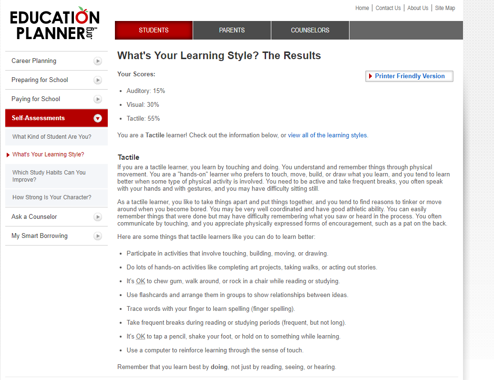
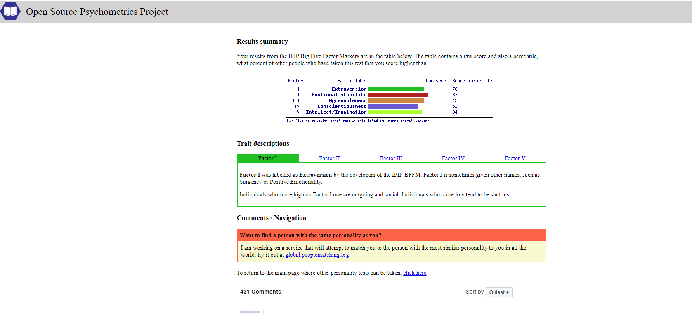

For the Myers-Briggs test I was given debater. The debater is known for speaking their mind no matter of others feelings. In some ways I can see this as I can be very blunt but can pick the situation. I believe that to be successful you need to be blunt about issues even if it can hurt some ones feelings.
Myers-Briggs test – Debater
Source- 16Personalities 2019
For what’s your learning style test I scored high for tactile. Tactile learning is learning through doing, it is a hands-on approach. The results from this test match what I have found in the past from previous learning.
Online learning style test - Tactile

Source- Education Planner 2011
For the big 5 personality test I scored high in emotional stability and low intellect/imagination. Scoring low in intellect/imagination which means that I would be traditional and conventional which in some ways I am. Scoring high in emotional stability fits in with who I usually am keeping a level head under stress.
Big 5 personality test

Source- Open Source Psychometrics Project
The results of these tests seem to relate to how I see myself and how I have been told that I react.
After looking at the results while working in a team I may not be very imaginative and could argue my point aggressively. The results help to point out my flaws that I will need to take into consideration to be a valuable team member.